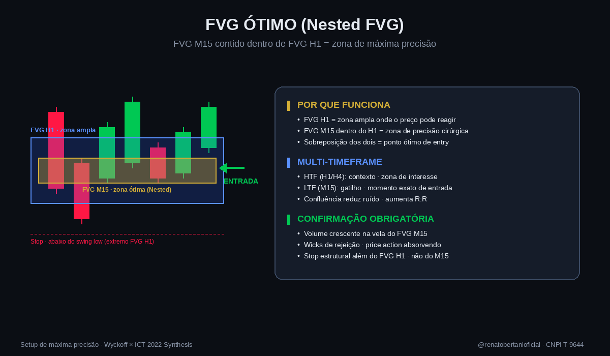

FVG Ótimo (Nested FVG)
Definição completa
O FVG Ótimo — também chamado de Nested FVG — ocorre quando um Fair Value Gap de timeframe menor (M15) está contido dentro de um FVG de timeframe maior (H1 ou H4). A zona de sobreposição entre os dois FVGs é o ponto onde o desequilíbrio de curto prazo e o de médio prazo convergem no mesmo nível de preço — gerando a maior probabilidade de rejeição institucional. É o setup de entrada de máxima precisão dentro de uma zona de FVG ampla.
Diagrama representativo

Setups direcionais
🟢 Setup Bullish
FVG bullish em H1 identificado (zona ampla). Dentro dessa zona, forma-se um FVG bullish em M15 (zona menor sobreposta). A região de sobreposição dos dois é o ponto ótimo de entrada long, onde a probabilidade de absorção institucional é máxima.
🔴 Setup Bearish
FVG bearish em H1 com FVG bearish em M15 contido dentro. A zona de sobreposição é o ponto ótimo de entrada short, com confluência de desequilíbrio em ambos os timeframes apontando pra rejeição.
Como identificar
- Identificar um FVG no HTF (H1 ou H4) como zona de interesse principal — geralmente entre a sombra de 3 candles consecutivos com gap de eficiência claro.
- Esperar o preço retornar à zona do FVG HTF — não antecipar entrada antes do retorno.
- Quando o preço estiver dentro do FVG HTF, observar o LTF (M15) buscando um FVG menor formando-se na mesma direção.
- Verificar se o FVG M15 está contido dentro do FVG H1 — a sobreposição é a zona Nested.
- Confirmar com volume crescente na vela que cria o FVG M15 e price action de absorção (rejeição clara, wicks expressivos).
Regras de entrada
- Entrar quando o preço atinge o FVG interno (M15) que está dentro do FVG externo (H1) — não entrar antes.
- Confirmar com candle de rejeição na zona de sobreposição (engulfing ou pin bar) com volume acima da média M20 do M15.
- Stop estrutural: além do extremo do FVG H1 (não do M15) — distância maior, mas mais segura contra ruído.
- R:R mínimo: 1:2 do entry ao próximo ponto de interesse HTF (PDH/PDL, OB H1, FVG H1 oposto).
- Realização parcial: 50% no primeiro objetivo (ponto estrutural mais próximo) com stop pra BE; trailing nos 50% restantes ou alvo final no PDH/PDL oposto.
Continue explorando a biblioteca